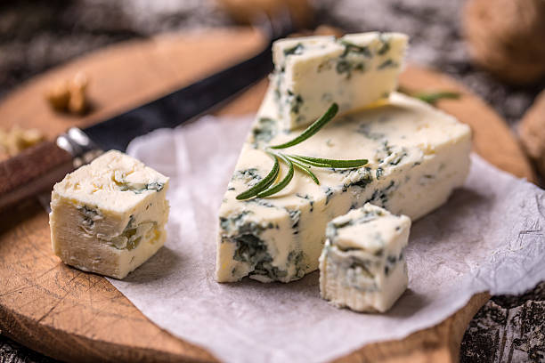
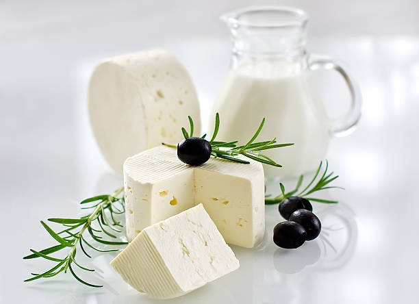
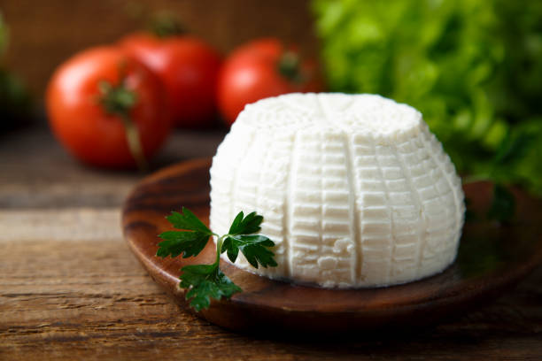
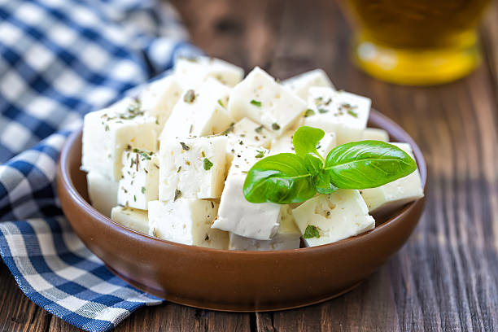
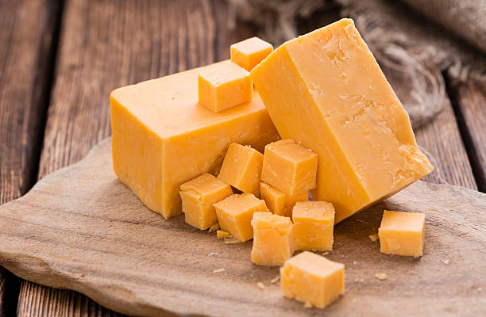
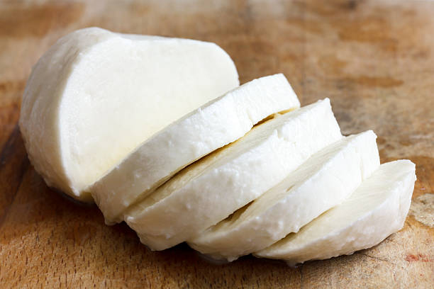

Top 10 most popular cheeses in the world
Camembert de Normandie, Normandy's most famous and iconic cheese is made from raw cow's milk and weighs an average of 250 grams. The flavor is intense, pungent and similar to that of mushrooms, grass and butter, while the aroma is moldy and cabbage-like.

First produced in 879 CE in Gorgonzola, a Lombardian town settled just outside of Milan, this type of blue cheese is made with cow's milk and distinguished by green or blue marbling of mold. To induce blue veining, the milk is inoculated with penicillin spores.

Paneer is a moist fresh cheese with a soft and crumbly texture, made from pasteurized cow's milk or water buffalo's milk. Unlike most cheeses, paneer does not involve rennet in the production process, and that is what makes it completely vegetarian.
Brie de Meaux is a soft French cheese made from cow's milk. The flat cheese has a delicate rind covered in white mold. It matures in cellars on straw mats in the Île-de-France area near Paris for at least four weeks. This particular variety of Brie is the most famous of all, and in the past, it has been known as the cheese of royalty and well-off people.
Gouda Holland is a semi-hard Dutch cheese that's produced exclusively from cows' milk from Dutch farms, and it's one of the most popular cheeses worldwide. The cheese is made in a flattened wheel shape and it's flavorful and aromatic (mild, fruity, sweet, butterscotch flavors), depending on the stage of maturity.
Considered to be among the world's top quality cheeses, Parmigiano Reggiano is made with raw, semi-skimmed milk from cows grazing on fresh grass and hay. It has a hard, gritty texture and its flavors range from nutty to robust and slightly piquant, depending on how long the cheese had matured.

Ricotta is a fresh, soft cheese made from sheep's, cow's, goat's or Italian water buffalo's milk. Technically, it is not a cheese but a creamy curd made by reheating the whey, a byproduct of cheesemaking – hence the name ricotta, which literary means re-cooked.

Feta is the most famous Greek cheese, affectionately called 'the princess of cheeses'. The cheese is made from sheep's milk or a mixture of sheep's and goat's milk (the latter should not exceed 30%). It is produced in the regions of Macedonia, Thessaly, Thrace, Epirus, the Peloponnese, and Central Greece.

This sharp cow's milk cheese is one of the most popular cheeses in the world today, and it was first produced in the village of Cheddar in Somerset county, England in the 12th century. Cheddar is a hard cheese made from pasteurized cow's milk, and it ranges from white to pale yellow in color.

Mozzarella is a fresh, soft, stretched curd cheese, made with whole cow's milk. Due to the fact that it has a fragrant aroma of fresh milk and a delicate creamy flavor, mozzarella is traditionally paired with light white wines. This Italian classic originates from the region of Campania, but nowadays it is produced all across the country.